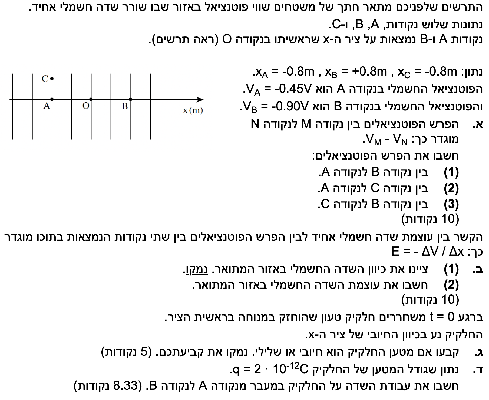

שלום תלמידים יקרים! לפנינו שאלה קלאסית ויפהפייה העוסקת בשדה חשמלי אחיד במרחב, משטחים שווי פוטנציאל המאונכים אליו, ועבודה של כוח חשמלי הפועל על חלקיק טעון. נפרק את השאלה הזו צעד אחר צעד, בצורה פדגוגית ומסודרת, תוך הישענות מדויקת על דף הנוסחאות ועל עקרונות הבסיס.

[תמונת השאלה המקורית]לא נמצאה תמונה בשם question-image.png באותה תיקייה.
סעיף א' - חישוב הפרשי פוטנציאלים
מה נתון:
שיעורי הנקודות על ציר \( x \): נקודה A במיקום \( x_A = -0.8 \text{ m} \), ונקודה B במיקום \( x_B = +0.8 \text{ m} \). נקודה C ממוקמת אנכית מעל נקודה A, כלומר שיעור ה- \( x \) שלה זהה: \( x_C = -0.8 \text{ m} \). פוטנציאלי הנקודות: \( V_A = -0.45 \text{ V} \), ו- \( V_B = -0.90 \text{ V} \). הנתונים כבר ביחידות תקניות (MKS).
מה מחפשים:
את הפרש הפוטנציאלים כפי שהוגדר: \( V_M - V_N \). ספציפית נדרש לחשב את הערכים הבאים: \( V_B - V_A \), \( V_C - V_A \), ו- \( V_B - V_C \).
מכיוון שנקודות C ו-A ממוקמות לאורך אותו ישר המאונך לציר התנועה הראשי (ציר ה-x), הן נמצאות על אותו משטח שווה פוטנציאל. מכאן נובע שפוטנציאל הנקודה C שווה לפוטנציאל הנקודה A, כלומר \( V_C = V_A = -0.45 \text{ V} \). נחשב את ההפרש:
טיפ מורה:
זכרו כי משטחים שווי פוטנציאל תמיד מאונכים לקווי השדה החשמלי. העובדה שנקודה C נמצאת "מעל" נקודה A לא משנה את הפוטנציאל שלה, מכיוון שרק תנועה לאורך קווי השדה (במקרה שלנו, ימינה או שמאלה) גורמת לשינוי בפוטנציאל החשמלי.
סעיף ב' - שדה חשמלי אחיד: כיוון ועוצמה
מה נתון:
הפרש הפוטנציאלים בין הנקודות A ו-B הוא \( V_B - V_A = -0.45 \text{ V} \). המרחק ביניהן לאורך ציר ה-x הוא ממיקום \( -0.8 \text{ m} \) ועד \( +0.8 \text{ m} \).
מה מחפשים:
(1) את כיוון השדה החשמלי במרחב (כולל נימוק). (2) את עוצמת השדה החשמלי \( E \).
נוסחאות ועקרונות בשימוש: \( E = -\frac{\Delta V}{\Delta x} \)עקרון זרימת קווי השדה
חישוב וניתוח:
חלק 1: קביעת כיוון השדה החשמלי
נשווה בין הפוטנציאלים: \( V_A = -0.45 \text{ V} \) לעומת \( V_B = -0.90 \text{ V} \). מבחינה מתמטית, \( -0.45 \) גדול מ- \( -0.90 \). כלומר, הפוטנציאל בנקודה A גבוה מהפוטנציאל בנקודה B (\( V_A > V_B \)). כיוון שקווי השדה תמיד מצביעים מפוטנציאל גבוה לנמוך, השדה מצביע מנקודה A לנקודה B. משמע, כיוון השדה החשמלי הוא בכיוון החיובי של ציר ה-x.
חלק 2: חישוב גודל השדה החשמלי
נחשב ראשית את המרחק וההעתק שבין הנקודה A לנקודה B:
נעגל את הערך ל-3 ספרות מהותיות לקבלת התשובה הסופית.
מסקנה:
1)כיוון השדה הוא ימינה (הכיוון החיובי של ציר x).
2)גודל השדה החשמלי הוא: \( E = 0.281 \text{ V/m} \).
💡 טיפ מורה: הנוסחה \( E = -\frac{\Delta V}{\Delta x} \) מכילה סימן מינוס מסיבה חשובה! הסימן הזה אומר לנו שהשדה החשמלי תמיד יצביע לכיוון שבו הפוטנציאל החשמלי יורד.
דרך מצוינת לזכור זאת היא בעזרת אנלוגיה פשוטה לכוח הכבידה: דמיינו כדור המונח על צלע הר. ממש כפי שכדור תמיד ישאף להתגלגל טבעית "למטה", במורד הפוטנציאל הכבידתי (ממקום גבוה למקום נמוך), כך גם השדה החשמלי "מצביע" תמיד במורד ה"גבעה החשמלית" – מפוטנציאל גבוה לפוטנציאל נמוך. בגלל זה, מטען חיובי תמיד ירגיש כוח שידחוף אותו "למטה" יחד עם כיוון השדה!
סעיף ג' - קביעת סימן מטען החלקיק
מה נתון:
בזמן \( t=0 \) משוחרר חלקיק טעון ממנוחה (\( v_0 = 0 \)) בראשית הצירים \( O \). החלקיק נע בכיוון החיובי של ציר ה-x. הוכחנו שהשדה החשמלי \( E \) פועל בכיוון החיובי של ציר ה-x.
מה מחפשים:
לקבוע האם סימן המטען של החלקיק \( q \) הוא חיובי או שלילי, ולנמק זאת.
מכיוון שהחלקיק שוחרר ממנוחה והחל לנוע בכיוון החיובי של ציר ה-x, אנו מסיקים שגודל המהירות שלו גדל בכיוון זה, ולכן התאוצה \( \vec{a} \) שלו היא בכיוון החיובי של ציר ה-x.
לפי החוק השני של ניוטון (\( \Sigma\vec{F} = m\vec{a} \)), כיוון התאוצה זהה לכיוון שקול הכוחות. לכן, הכוח החשמלי \( \vec{F}_E \) הפועל על החלקיק פועל בכיוון החיובי של ציר ה-x.
מצאנו בסעיף הקודם שגם השדה החשמלי \( \vec{E} \) מצביע בכיוון החיובי של ציר ה-x. כלומר, וקטור הכוח החשמלי ווקטור השדה החשמלי פועלים באותו כיוון בדיוק. על פי הנוסחה \( \vec{F}_E = q\vec{E} \), כדי ששני הווקטורים יצביעו לאותו כיוון, הסקלר \( q \) חייב להיות חיובי.
מסקנה: המטען של החלקיק הוא חיובי \( q > 0 \).
💡 טיפ מורה: כלל אצבע מצוין שכדאי לזכור תמיד בעל פה: "מטענים חיוביים תמיד 'זורמים' עם כיוון השדה החשמלי (מפוטנציאל גבוה לנמוך), ואילו מטענים שליליים נדחפים נגד כיוון השדה (מפוטנציאל נמוך לגבוה)".
סעיף ד' - חישוב העבודה החשמלית
מה נתון:
גודל המטען הוא \( q = 2 \cdot 10^{-12} \text{ C} \). מכיוון שהוכחנו שהמטען חיובי, אנו יודעים שערכו הוא \( q = +2 \cdot 10^{-12} \text{ C} \). בנוסף, פוטנציאלי הנקודות הם \( V_A = -0.45 \text{ V} \) ו- \( V_B = -0.90 \text{ V} \).
מה מחפשים:
את עבודת השדה החשמלי המבוצעת במעבר של החלקיק מנקודה A לנקודה B, המסומנת כ- \( W_{A \to B} \).
מסקנה: עבודת השדה החשמלי היא: \( W_{A \to B} = 9 \cdot 10^{-13} \text{ J} \).
💡 טיפ מורה: יצאה לנו עבודה חיובית. זה הגיוני מאוד! כאשר שדה חשמלי עושה עבודה חיובית על חלקיק, הוא מעביר לו אנרגיה ומאיץ אותו. אפשר לחשוב על כך באנלוגיה לכוח הכבידה: כאשר גוף יורד בגובה, כוח הכבידה פועל בכיוון התנועה ולכן עושה עבודה חיובית, ובמקביל גם הפוטנציאל הכבידתי קטן. באותו אופן, גם כאן סימן העבודה צריך להסתדר עם כיוון התנועה ועם הירידה בפוטנציאל. תמיד וודאו שהסימן של התוצאה שלכם מסתדר עם ההיגיון הפיזיקלי של תנועת המערכת! זכרו את הכלל: אם הכוח והתנועה הם באותו כיוון, העבודה תהיה חיובית; אם התנועה היא בכיוון הפוך לכוח, העבודה תהיה שלילית, והגוף יאבד אנרגיה קינטית.
נוסח השאלה המקורית
[תמונת השאלה המקורית]לא נמצאה תמונה בשם question-image.png.